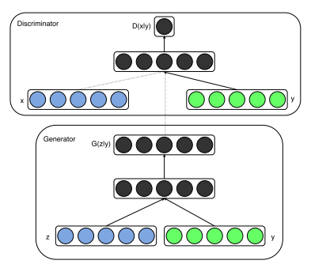

年终总结2023
近期工作
深度学习课程—基于深度学习的核动力装置事故诊断技术
摘要
基于NPPAD构建了一个标准化的核电厂事故数据集，并探索了虚假数据集生成技术和核电厂事故诊断技术，对两种技术中涉及的各模型进行了对比分析。实验结果表明，在生成虚假数据集方面，TimeGAN相较于cGAN表现出更高的性能，TimeGAN可以更好的捕捉时序数据的动态特征。在事故诊断方面，我们基于MLP、CNN、RNN、Transformer四类模型对事故类别进行分类，在真实数据上进行实验，结果表明Transformer对事故有最好的分类能力。另外，数据的标准化对分类效果有较大影响，在数据预处理时进行标准化处理，会使得所有模型的效果都大幅度提高。
数据集构建
事故特征参数为96个，截取事故发生后960s的数据（采样间隔10s），得到维度为[96, 96]的归一化样本。由于特征间数量级差异较大，采用最大值归一化处理。
| Accident | Description | Number | Severity |
|---|---|---|---|
| LOCA | Loss of Coolant Accident (Hot Leg) | 100 | % of 100 cm2 |
| LOCAC | Loss of Coolant Accident (Cold Leg) | 100 | % of 100 cm2 |
| SLBIC | Steam Line Break Inside Containment | 101 | % of 100 cm2 |
| SLBOC | Steam Line Break Outside Containment | 100 | % of 100 cm2 |
| SGATR | Steam Generator A Tube Rupture | 100 | % of 1 full tube rupture |
| SGBTR | Steam Generator B Tube Rupture | 110 | % of 1 full tube rupture |
| RW | Rod Withdrawal | 100 | % (+/-) withdrawn |
| RI | Rod Insertion | 82 | % (+/-) insertion |
| FLB | Feedwater Line Break | 100 | % of 100 cm2 |
| MD | Moderator Dilution | 100 | % of unborated injection |
| LR | Load Rejection | 99 | % of full load rejected |
| LLB | Letdown Line Break in auxiliary buildings | 101 | % of nominal letdown flow |
虚假数据集生成技术
由于核动力装置具有极高的安全性和可靠性，从商用核电厂诞生至今发生了极少的核事故，目前只能利用仿真数据构造有限大小的数据集。而GAN作为一种生成模型，具有虚假数据生成能力，我们希望借助GAN模型生成更多的数据，来增强原始数据集。
结果分析
（1）保真度：受视觉领域图像生成思想启发，将生成数据和真实数据转为图像，通过观察图像效果和FID值计算，来比较两种模型的性能。


（2）事故诊断得分：用生成数据训练核电厂事故诊断模型，在真实数据集上测试，用真实数据测试集的准确率作为得分。
| 模型 | 生成数据集（cGAN） | 生成数据集（TimeGAN） | 混合数据集（原始+cGAN） | 混合数据集（原始+TimeGAN） |
|---|---|---|---|---|
| MLP1 | 19.33% | 6.72% | 94.12% | 97.48% |
| MLP2 | 5.04% | 5.88% | 93.28% | 96.64% |
| Resnet | 10.92% | 19.33% | 100% | 99.16% |
| DenseNet | 10.92% | 4.20% | 99.16% | 99.16% |
| GRU | 0.84% | 26.05% | 86.55% | 92.44% |
| LSTM | 0.84% | 17.65% | 89.92% | 93.2% |
| Transformer | 5.88% | 13.45% | 99.16% | 99.16% |
核电厂事故诊断技术
探索了深度学习中常见的判别模型—多层感知机（MLP）、卷积神经网络（CNN）、循环神经网络（RNN）和Transformer等模型在核电厂事故诊断方面的性能。
结果分析
（1）模型结果
| 模型名称 | FLOPs | Params | FLOPs/Params | 测试集准确率 |
|---|---|---|---|---|
| MLP1 | 3.54M | 0.11M | 32.18 | 67.23% |
| MLP1(with first BN layer) | 99.16% | |||
| MLP4 | 155.84M | 4.87M | 32.00 | 62.18% |
| MLP4(with first BN layer) | 99.16% | |||
| ResNet_3 | 12187.01M | 0.50M | 24372.02 | 67.23% |
| ResNet_3(with first BN layer) | 99.16% | |||
| DenseNet_4 | 1469.34M | 0.19M | 7733.37 | 38.66% |
| DenseNet_4(with first BN layer) | 99.16% | |||
| GRU | 2777.86M | 0.90M | 3086.51 | 78.15% |
| GRU(with first BN layer) | 95.80% | |||
| LSTM | 3701.30M | 1.20M | 3084.42 | 80.67% |
| LSTM(with first BN layer) | 96.64% | |||
| Transformer | 121.50M | 0.04M | 3037.5 | 88.24% |
| Transformer(with first BN layer) | 99.16% |

（2）结果讨论
（a）模型
对比几个模型的准确率，MLP1(BN)= MLP4(BN) = ResNet_3(BN) = DenseNet_4(BN) = Transformer(BN) > LSTM(BN) > GRU(BN) > Transformer > LSTM > GRU > ResNet_3 > MLP1 > MLP4 > DenseNet_4。在模型没有首层BN层时，效果最好的是Transformer，其次是RNN（LSTM和GRU），在这两类模型中我们均是把事故数据当做时间序列来处理，体现出数据的时序信息对判断事故类别起着比较重要的作用，其中Transformer不仅准确率最高，参数量和运算量也很小。CNN的结果次于上述两类模型，在CNN中我们把每一例事故数据（96*96大小）当做图像处理，但数据并不具有像自然图像那样的二维结构信息，因此效果一般。MLP的准确率和它的隐藏层层数关系不大，模型变大，效果未必变好。另外，层数较少的MLP层加入非线性激活函数反而会降低模型的准确率，我们认为是ReLU函数在网络层数太少时会影响梯度的更新，我们用Sigmoid函数替代ReLU能在效果上获得不错的提升，直接去掉激活函数，效果还会进一步提升，我们认为原因在于数据里存在一些线性可分的特征，加入非线性激活函数，在隐藏层较少时会影响它们的线性可分性。
（b）数据标准化
实验中我们发现，在模型前加上一个BN层后，模型的效果均会提升至95%以上，即使是一层MLP也可以非常准确地对事故进行分类，我们认为该BN层的作用与数据预处理时进行标准化（减均值、除以方差）的作用类似，差别仅在于BN层在训练时使用的是该batch的均值与标准差，而数据标准化使用的是全体数据的均值与标准差，并且BN层含有两个可学习参数（scale参数γ和shift参数β）。输出训练好的模型BN层的γ和β，我们发现γ≈1，β≈0，因此可以认为该BN层的作用和数据标准化近似相同。我们进行了实验验证，去掉了模型的首层BN层，并在数据预处理中加入标准化操作，发现最终准确率也均在95%以上，验证了我们的想法。在一开始我们只将数据集作了归一化处理，效果跟后来做了标准化处理相比相差较多，我们认为原因在于事故数据中的异常值较多、偏离均值较远，造成归一化的效果不佳，而标准化能避免这一问题，更好的保持样本间距。
（c）混淆矩阵
根据各个模型结果的混淆矩阵，可以看出FLB、RW属于比较容易判断出的类别，在所有的模型中都能较准确地识别出来，而SLBOC和MD容易混淆，在几乎大部分模型中SLBOC都有一部分数据容易被误判为MD。除了SLBOC和MD之外，其他大部分类别的数据在模型做了标准化预处理之后都能被较好地分类。
项目总结
- 用深度学习技术去解决领域问题，要做好从构建数据集到训练深度学习模型的每一步工作。
- 初步探索MLP、CNN、RNN、Transformer和GAN等模型在核电厂事故诊断领域的应用。
- 数据集大小和数据预处理方法对深度学习模型的结果有较大影响。
- 初始阶段针对数据集做详细数据分析，将有助于选取更合适的深度学习模型。
- 未来工作将进一步探索深度学习模型在时序数据异常监测和关键参数预测方面的应用。
More info: Report
学期总结
课程
《深度学习》《中国马克思主义与当代》《博士生英语EX》
科研
基于PCTRAN软件构建核电厂事故数据集—NPPAD
This paper presents a first-of-its-kind open dataset created using PCTRAN, a pre-developed and widely used simulator for NPPs. The dataset, namely nuclear power plant accident data (NPPAD), basically covers the common types of accidents in typical pressurised water reactor NPPs, and it contains time-series data on the status or actions of various subsystems, accident types, and severity information. Moreover, the dataset incorporates other simulation data (e.g., radionuclide data) for conducting research beyond accident diagnosis.
Qi, B., Xiao, X., Liang, J. et al. An open time-series simulated dataset covering various accidents for nuclear power plants. Sci Data 9, 766 (2022). https://doi.org/10.1038/s41597-022-01879-1
完善并投稿硕士阶段的综述文章
This paper presents a review of various AI-based system-level fault diagnosis methods for NPPs. We first give the development history of AI. Based on this exposition, AI-based fault diagnosis techniques are classified into knowledge-driven and data-driven approaches. For knowledge-driven methods, we discuss both the early IF-THEN-based fault diagnosis techniques and the current new theory-based ones. The principles, application, and comparative analysis of the representative methods are systematically described. For data-driven strategies, we discuss single-algorithm-based techniques like ANN, SVM, PCA, DT, and Clustering, as well as hybrid techniques which combine algorithms together. The advantages and disadvantages of both knowledge-driven and data-driven methods are compared, illustrating the tendency to combine the two approaches. Finally, we give some possible future research directions and suggestions.
Qi, B.,Liang, J,Tong,J.Fault diagnosis techniques for nuclear power plants: a review from the artificial intelligence perspective.Energies.(Under review)
阅读文献，摸索博士阶段课题。

未来计划
- 学习高温气冷堆仿真机使用，构建数据集。
- 学习机器学习和Pytorch，补充知识结构。
- 着手开展博士课题工作，为下学期开题做准备。